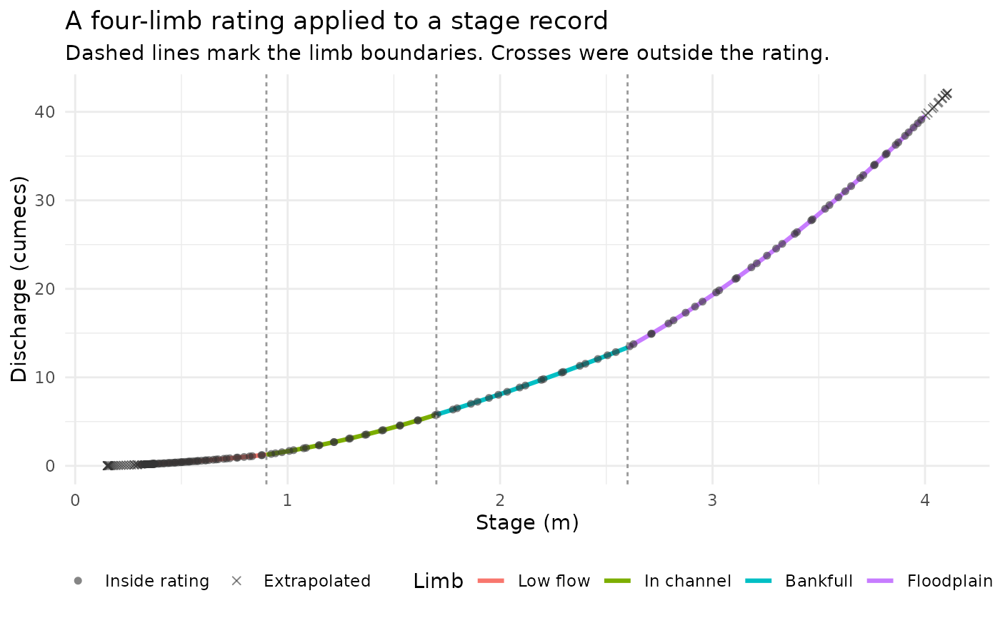
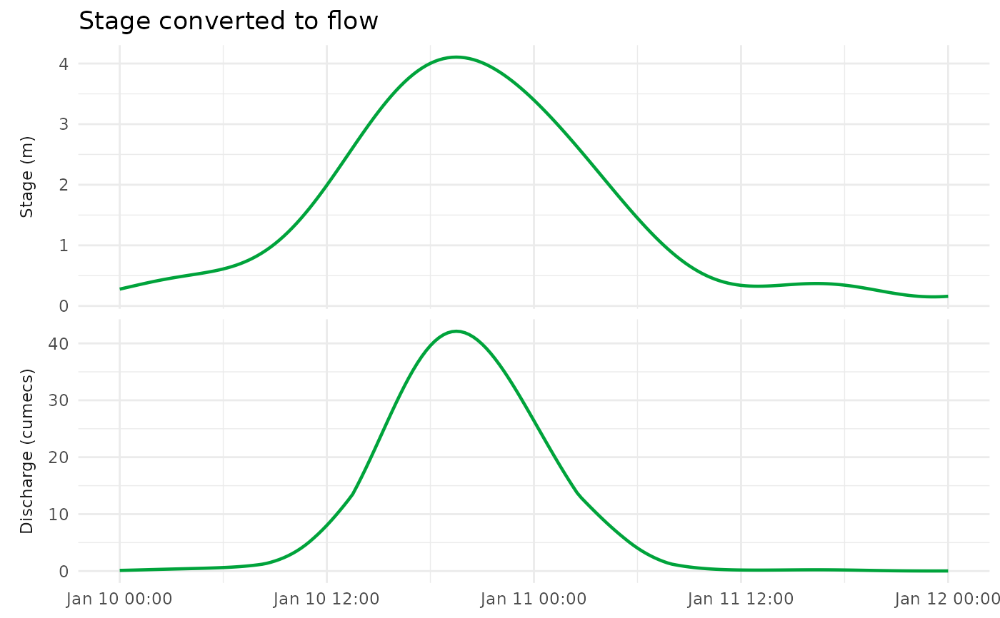

Dispatches on the fit's class: FlodeRating and
FlodeSegmentedRating each provide their own method. Replaces the
previous separate apply_rating()/apply_segmented_rating() pair –
one name, dispatched by what you're holding.
Examples
# A rating typed in by hand, e.g. from a station's published rating
# sheet: four limbs, one row each. C, a and n are the coefficients of
# Q = C * (H - a)^n on that limb (a is the stage at zero flow), and
# lower_level/upper_level are the stage range (m) the limb covers. Each
# limb starts where the previous one ends, and C is chosen so the limbs
# also meet in discharge there.
limb_names <- c("Low flow", "In channel", "Bankfull", "Floodplain")
rating_dt <- data.table::data.table(
lower_level = c(0.30, 0.90, 1.70, 2.60),
upper_level = c(0.90, 1.70, 2.60, 4.00),
C = c(1.80000, 2.85549, 4.72355, 2.36038),
a = c(0.10, 0.25, 0.55, 0.40),
n = c(1.60, 1.90, 1.45, 2.20)
)
my_fit <- FlodeRatingTable(table = rating_dt)
# A stage record to convert: a two-day event on a 15-minute step. Stage
# starts and ends below the lowest limb (0.30 m) and the peak goes above
# the highest (4.00 m), so both ends of the rating are extrapolated.
time_h <- seq(0, 48, by = 0.25)
stage_dt <- data.table::data.table(
datetime = as.POSIXct("2026-01-10 00:00", tz = "UTC") + time_h * 3600,
stage = 0.25 + 3.9 * exp(-((time_h - 20) / 9)^2) + 0.10 * sin(time_h / 2)
)
flow_dt <- apply_rating(my_fit, stage_dt)
#> INFO [2026-11-06 10:44:50] apply_rating(): 35 of 193 stage value(s) fell outside the rating and were extrapolated.
head(flow_dt)
#> datetime stage discharge extrapolated
#> <POSc> <num> <num> <lgcl>
#> 1: 2026-01-10 00:00:00 0.2779512 0.1136983 TRUE
#> 2: 2026-01-10 00:15:00 0.2940671 0.1306158 TRUE
#> 3: 2026-01-10 00:30:00 0.3104096 0.1486543 FALSE
#> 4: 2026-01-10 00:45:00 0.3268280 0.1676437 FALSE
#> 5: 2026-01-10 01:00:00 0.3431807 0.1873955 FALSE
#> 6: 2026-01-10 01:15:00 0.3593381 0.2077105 FALSE
# How much of the record fell outside the rating's range?
table(flow_dt$extrapolated)
#>
#> FALSE TRUE
#> 158 35
# Which limb each stage fell on (for colouring the plot)
breaks <- c(rating_dt$lower_level[1], rating_dt$upper_level)
limb_idx <- pmin(pmax(findInterval(flow_dt$stage, breaks, rightmost.closed = TRUE), 1L), 4L)
flow_dt$limb <- factor(limb_names[limb_idx], levels = limb_names)
library(ggplot2)
# The rating curve itself, with the stage values that were converted
curve_dt <- data.table::rbindlist(lapply(seq_len(nrow(rating_dt)), function(i) {
s <- seq(rating_dt$lower_level[i], rating_dt$upper_level[i], length.out = 60)
data.frame(stage = s, limb = limb_names[i],
discharge = rating_dt$C[i] * (s - rating_dt$a[i])^rating_dt$n[i])
}))
curve_dt$limb <- factor(curve_dt$limb, levels = limb_names)
ggplot() +
geom_line(data = curve_dt, aes(stage, discharge, colour = limb), linewidth = 1.1) +
geom_point(data = flow_dt, aes(stage, discharge, shape = extrapolated),
colour = "grey20", size = 1.6, alpha = 0.6) +
geom_vline(xintercept = rating_dt$upper_level[-4], linetype = "22", colour = "grey60") +
scale_shape_manual(values = c(`FALSE` = 16, `TRUE` = 4),
labels = c(`FALSE` = "Inside rating", `TRUE` = "Extrapolated")) +
labs(x = "Stage (m)", y = "Discharge (cumecs)", colour = "Limb", shape = NULL,
title = "A four-limb rating applied to a stage record",
subtitle = "Dashed lines mark the limb boundaries. Crosses were outside the rating.") +
theme_minimal() +
theme(legend.position = "bottom")

# The same event as a flow hydrograph beneath its stage record
long_dt <- data.table::melt(flow_dt, id.vars = "datetime",
measure.vars = c("stage", "discharge"),
variable.name = "series", value.name = "value")
long_dt$series <- factor(long_dt$series, c("stage", "discharge"),
c("Stage (m)", "Discharge (cumecs)"))
ggplot(long_dt, aes(datetime, value)) +
geom_line(colour = "#00A33B", linewidth = 0.8) +
facet_grid(series ~ ., scales = "free_y", switch = "y") +
labs(x = NULL, y = NULL, title = "Stage converted to flow") +
theme_minimal() +
theme(strip.placement = "outside")
